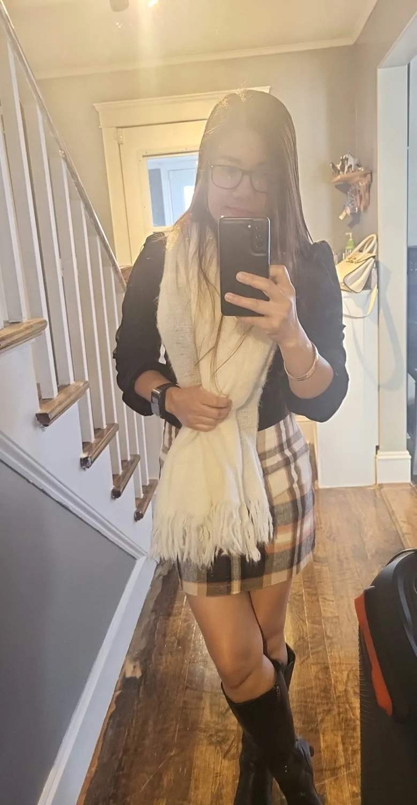

01
Keep learning
Approaching each day with curiosity, openness and a willingness to develop new skills.
A personal space for creativity, growth, meaningful moments and the journey of becoming.

This is a welcoming place to share personality, passions, aspirations and the moments that matter.
Welcome to my personal portfolio. Here, you'll find a glimpse into the things I value: learning, creativity, connection and continuous growth.
I believe that each new experience is an opportunity to discover something meaningful.
Sharing the journey, celebrating progress and collecting memories along the way. This website will continue to grow with new stories, photos and milestones.
Stay curious. Keep growing. Enjoy the journey.
Sample strengths and interests featured in this portfolio. These can be personalized with verified experience later.
A few themes that make this journey special. Personal accomplishments and certifications can be added when available.
Approaching each day with curiosity, openness and a willingness to develop new skills.
Finding inspiration in everyday life, personal style and fresh perspectives.
Recognizing small wins, meaningful experiences and the value of steady progress.
A personal photo collection, ready to expand with new favorite moments.
More photos and memories can be added here anytime.
Thanks for visiting Maryann Marcelo's personal website. Contact links can be added when available.
Back to top ↑Note: Introductory text and skills are illustrative placeholders, not verified biographical claims.